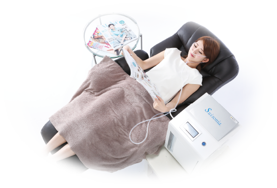

痛みの原因を見極め、根本から改善へ。 お身体の状態に合わせた最適な施術をご提案します。
骨折・脱臼・捻挫・打撲・挫傷など、急性のケガに対して健康保険が適用されます。 福岡市博多区竹下で長年地域の皆さまに寄り添い、適切な施術を行っています。
肩こり・腰痛・姿勢のゆがみ・慢性的な疲労など、保険適用外のお悩みに対して行う特別施術です。 お身体の状態を丁寧に確認し、最適な施術プランをご提案します。
交通事故によるむち打ち・打撲・痛みには、自賠責保険が適用されます。 窓口負担は0円で施術が受けられます。 痛みが長引く前に、早めの施術をおすすめしています。

スイソニアは高濃度の水素を体内に取り込み、 活性酸素の除去・疲労回復・美肌・睡眠改善などに効果が期待できるリラクゼーション機器です。
週1〜2回・60分
1日おき60分 × 5回程度
1日おき60分 × 10回程度
3日に1回・2時間 × 約2か月
毎日1時間 × 6回程度
毎日2時間 × 6回程度
朝2時間＋夕方2時間 × 2〜6か月
※ 効果の実感には個人差があります。無理のないペースでご利用ください。
A. 当院は予約優先制です。お電話またはネット予約をご利用ください。 予約無しでも順次対応いたします。
A. お身体の状態によりますが、初回の検査で最適な通院ペースをご提案します。
A. はい、キッズスペースをご用意していますので安心してご来院ください。